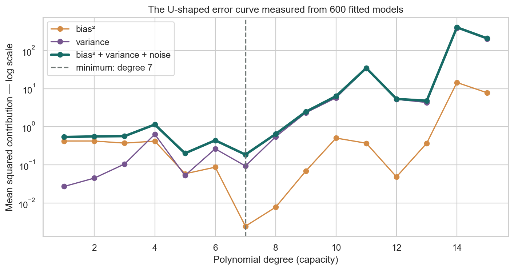

ML Hands-on Lab · Foundations
The bias–variance trade-off
1. The one-sentence version
A rigid model misses stable structure, while an overly flexible model chases accidental details; good prediction lives between those errors.
2. The intuition
Picture tracing a coastline. A straight ruler misses every bay: high bias. A thread wrapped around every grain of sand changes wildly whenever the tide moves: high variance. You want enough flexibility to capture bays, not grains.
A five-fit example
At one input, suppose truth is 1.0 and five flexible models predict [0.8, 1.0, 1.2, 1.1, 0.9]. Their mean is 1.0, so bias is 0. Their squared deviations from the mean sum to 0.10, so variance is 0.10/5=0.02. A rigid model might predict 0.6 every time: variance 0, but bias is 0.6−1.0=−0.4 and bias² is 0.16. Stability alone is not accuracy.
3. The maths in plain English
\[\mathbb E[(Y-\hat f(x))^2]=\text{Bias}(\hat f(x))^2+\text{Var}(\hat f(x))+\sigma^2\]
\(\hat f(x)\) is the prediction from a model fitted to one random training set. Bias compares the average fitted prediction with truth; more systematic miss makes it larger. Variance measures changes across possible training sets; more sample sensitivity makes it larger. \(\sigma^2\) is noise in the outcome and cannot be removed by choosing a model.
\[\text{Ridge fit}=\arg\min_\beta\sum_i(y_i-X_i\beta)^2+\alpha\sum_j\beta_j^2\]
The first term rewards close fit. The second charges for large coefficients. Increasing \(\alpha\) usually raises bias and lowers variance; decreasing it lets the curve react more freely.
4. What the model is actually doing during training
- Expand each input into powers such as \(x,x^2,x^3\).
- Choose coefficients that minimize squared error plus any regularization penalty.
- A low degree searches a small family of smooth shapes.
- A high degree searches a much larger family and can fit local noise.
- Validation estimates which capacity transfers best; repeated resampling reveals how sensitive that choice is.
5. The knobs
| Knob | Too low | Too high |
|---|---|---|
| Polynomial degree | Underfits bends; high bias. | Oscillates with the sample; high variance. |
| Ridge alpha | Coefficients can become unstable. | Useful curvature is flattened. |
| Training rows | Flexible models are weakly constrained. | Usually helps; cost and drift become the limits. |
| Feature count | Stable signal may be absent. | Spurious patterns multiply without enough rows. |
6. Assumptions and failure modes
The neat decomposition assumes squared error, a stable data-generating process, and repeated samples from it. Real systems drift. High training error can also come from broken features, not merely bias. A small train–validation gap can mean both are underfitting. A large gap suggests variance, leakage, or a distribution mismatch; it is a clue, not a diagnosis by itself.

7. Code
Minimal version
from sklearn.pipeline import make_pipeline
from sklearn.preprocessing import PolynomialFeatures
from sklearn.linear_model import Ridge
model = make_pipeline(
PolynomialFeatures(degree=5),
Ridge(alpha=0.01)
)
model.fit(X_train, y_train)Realistic version
from sklearn.model_selection import GridSearchCV
from sklearn.pipeline import Pipeline
from sklearn.preprocessing import PolynomialFeatures, StandardScaler
from sklearn.linear_model import Ridge
pipe = Pipeline([
("poly", PolynomialFeatures(include_bias=False)),
("scale", StandardScaler()),
("ridge", Ridge()),
])
search = GridSearchCV(pipe, {
"poly__degree": [1, 3, 5, 7, 10],
"ridge__alpha": [0.001, 0.01, 0.1, 1.0],
}, cv=5, scoring="neg_root_mean_squared_error")
search.fit(X_train, y_train)8. Where it's actually used
- Demand forecasting, where promotional noise can tempt a curve to chase one-off spikes.
- Medical risk models, where small cohorts limit safe model complexity.
- Insurance pricing, where regularization stabilizes correlated rating factors.
- Sensor calibration, where smooth physical response should not follow measurement jitter.
- Computer vision transfer learning, where freezing a backbone reduces variance on small image sets.
9. How it relates to its neighbours
Regularization, early stopping, pruning, and data augmentation are different ways to control effective capacity. The bias–variance trade-off is about prediction error under repeated samples; it is not the same as the fairness meaning of bias. Learning curves extend the diagnosis by showing how train and validation error change as you add data.